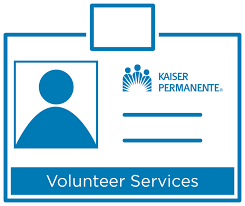
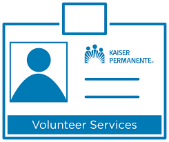

Justin Saifi
---
I am a dedicated sophomore at the University of California, Riverside (UCR), majoring in Business Administration. Over the past four years, I have honed my leadership skills through a prominent role at Kaiser Hospital. In this position, I led a team, showcasing my ability to organize and inspire others effectively. My tenure at Kaiser has equipped me with valuable experience in navigating complex organizational structures and managing diverse teams.
Additionally, I bring a strong foundation in accounting, having served as an accountant for a local gas station in my hometown of San José. In this role, I managed financial transactions with precision, demonstrating a keen understanding of accounting principles. My hands-on experience in financial management has deepened my analytical skills and attention to detail.
As a hardworking student, I am committed to excelling in my academic pursuits.
My coursework at UCR has provided me with a solid theoretical background in business administration, complementing my practical experience. I have a proven track record of balancing academic responsibilities with professional commitments, showcasing my dedication to both personal and career growth.
Beyond academic and professional endeavors, I actively engage in extracurricular activities to further enrich my skill set. Whether participating in clubs, organizations, or volunteer work, I seek opportunities to broaden my perspectives and contribute meaningfully to my community. These experiences have reinforced my commitment to collaboration, adaptability, and effective communication.
My resume reflects not only my academic achievements but also my hands-on experience in leadership and accounting. I am enthusiastic about leveraging this unique blend of skills to contribute meaningfully to future opportunities. As I progress through my academic journey at UCR, I am eager to continue expanding my knowledge and applying it in real-world scenarios.
In summary, I am a hardworking and dedicated business administration major with a proven track record in leadership and accounting. My experiences at Kaiser Hospital and a local gas station have shaped me into a well-rounded individual, ready to take on challenges and contribute effectively to any team or project.
---
Experience
Developer
• Developed advertising campaigns for realtors through my agency HydraKlient.
• Lead volonteer at Kaiser Permanente (3+ years))
• Experience with Tik tok ads, Youtube ads, Meta Ads and lead generation
Accountent
• Responsible for adding up all forms of revenue for a Chevron gas station along with the mechanic shop
_ Kept track of profit losses and created extensive experience using excel
• etc etc
Appointment Setter/Closer
• Contacted potential clients for ecommerce agency through social media platforms like linkedin and Instagram/Meta
• Got onto sales calls with a portion of the leads generated and pitch the services with a high closing rate of 70%
• Generated close to 5000 leads for the business
• Ended up closing around 200 clients that all had an average length of 7 months partnership with our agency totaling in over 6 figures worth of revenue
Education
UC Riverside
University of California Riverside
University of California Riverside
Portfolio





